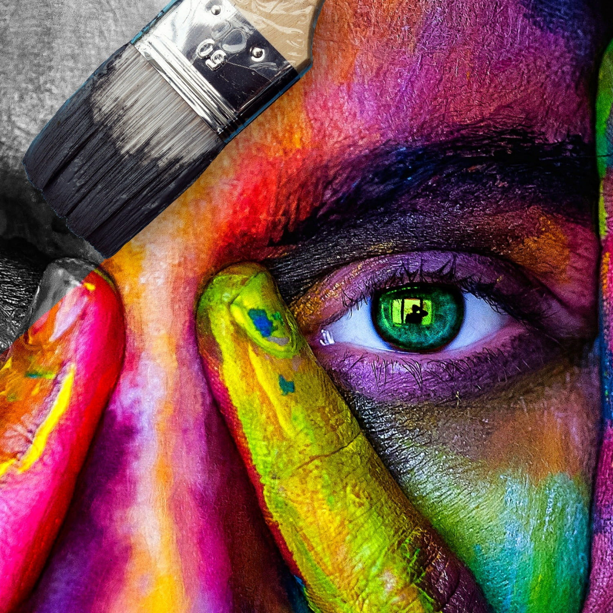
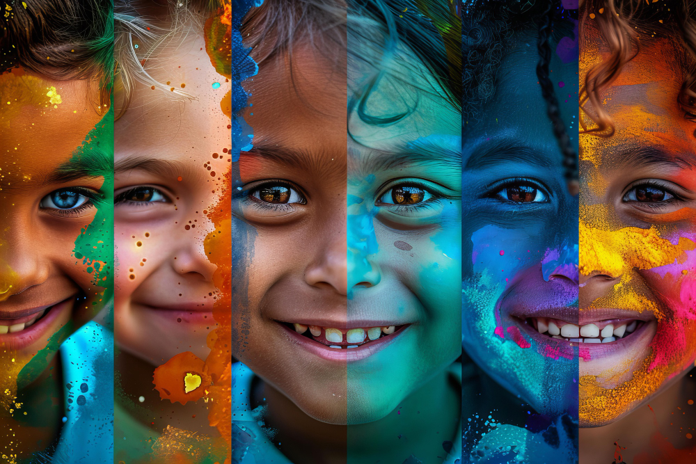
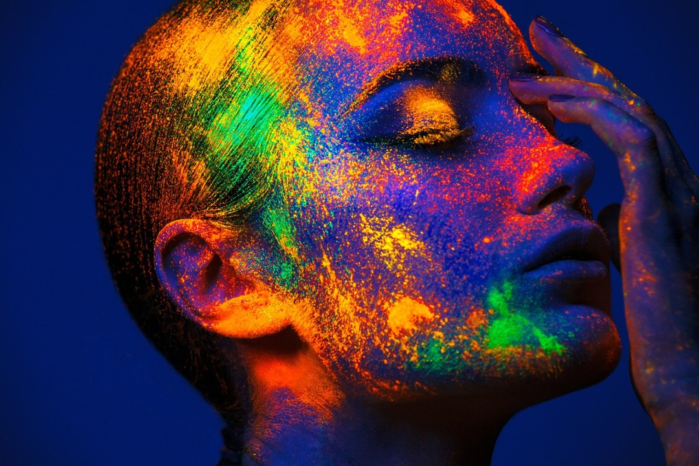
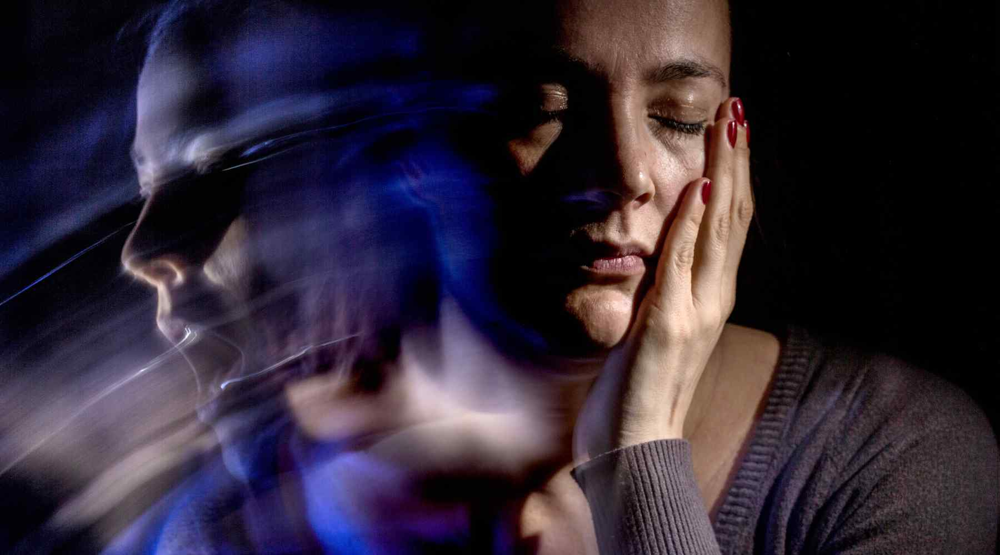

maintaining balance and focus through thoughtful color placement,
blend of sweets of brown dogs and white kitty cats, Acrylic and colored pencils.Colorful Thoughts
maintaining balance and focus through thoughtful color placement. blend of sweets of brown dogs and white kitty cats. Acrylic and colored pencils...
What is the first a human and child of light do? You can feel the pigments spent on the canvas. As you do the white and soft the background turns into a river of fresh paint
Very past the laughs on her face when asked to leave pigments runs down the canvas Enslave, a Desire to be Free
She is a hound, a sick dog flowers the living and flesh by her rotten flesh. Sick not in the flesh but in the mind, very living and pleasant to the eye with wondering colors but in a controlled manner. figure could be your mind playing tricks on you.
the sorrows that her heart can bear. colorful figure with how grand he is. Thunder the Blues and the flash of white. fallen angel who have lost their way and now and only now has the chance to climb the staircase to the heavens.
Redemption
One by one of the screening of the acne from their lips. The echos of sorrow. Thoughts may wander into different shapes and figures. In the flesh but in the mind,
Sprilled through it and with it. One eye is open and one the eye can see while the other is blind. Parasitic Wisdom Enslave, a Desire to be Free